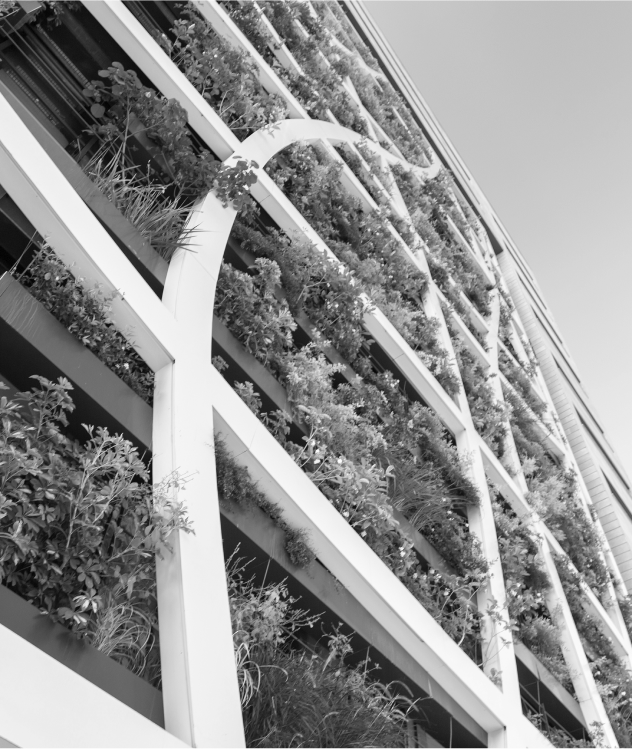

Afrontamos el futuro con un claro compromiso contra el cambio climático y la promoción del ahorro energético. Ponemos en práctica soluciones en pro de garantizar la protección y conservación del medioambiente.
 Trabajamos bajo exigentes criterios de ahorro energético integrando en nuestros
edificios sistemas que contribuyen a una mejor gestión energética y a una reducción de emisiones de CO2.
Trabajamos bajo exigentes criterios de ahorro energético integrando en nuestros
edificios sistemas que contribuyen a una mejor gestión energética y a una reducción de emisiones de CO2.
- Promovemos edificios A con los estándares de las certificaciones de eficiencia
energética, calidad y gestión ambiental.
- Analizamos cada nuevo proyecto apostando por diseños y modelos constructivos que
respeten el entorno y se integren dentro del ecosistema circundante.z
Plan de Sostenibilidad
Afrontamos el futuro con un claro compromiso contra el cambio climático y la promoción del ahorro energético. Ponemos en práctica soluciones en pro de garantizar la protección y conservación del medioambiente.
- Trabajamos bajo exigentes criterios de ahorro energético integrando en nuestros
edificios sistemas que contribuyen a una mejor gestión energética y a una reducción de emisiones de CO2.
- Promovemos edificios A con los estándares de las certificaciones de eficiencia
energética, calidad y gestión ambiental.
- Analizamos cada nuevo proyecto apostando por diseños y modelos constructivos que
respeten el entorno y se integren dentro del ecosistema circundante.z
01
